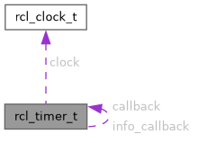

- Generated by
 1.15.0
1.15.0
|
nros C API
Lightweight ROS 2 client for embedded real-time systems
|
#include <nros_generated.h>

Data Fields | |
| void * | _executor |
| rcl_timer_callback_t | callback |
| const struct rcl_clock_t * | clock |
| size_t | handle_id |
| rclc_timer_callback_with_info_t | info_callback |
| uint64_t | period_ns |
| enum rclc_timer_state_t | state |
Timer structure.
Already an arena handle before phase-487: rclc_executor_add_timer creates the timer inside the executor arena and records (handle_id, _executor) here, and every live accessor forwards there. The period, callback and clock are the REGISTRATION INPUTS: rclc's rclc_timer_init_default(timer, support, period, callback) takes them at init, before any executor exists, and a removed timer can be added again, so they stay. phase-487 W3 removed the one field that was a copy, last_call_time_ns: written by init and reset, read by nothing, and stale for any timer the executor ran (issue 1049). phase-515 C1 removed the context pointer with the callback contract that carried it.
| void* rcl_timer_t::_executor |
Opaque pointer to internal executor (set by rclc_executor_add_timer)
| rcl_timer_callback_t rcl_timer_t::callback |
User callback function
| const struct rcl_clock_t* rcl_timer_t::clock |
The clock this timer is scheduled against, or NULL for the WALL timer rclc_timer_init_default creates (phase-430 W1).
rcl's rcl_timer_init takes a rcl_clock_t * here and rcl's timer keeps it; ours does the same, in the same position, so a reader of one recognises the other. The clock must outlive the timer — the executor reads its type at rclc_executor_add_timer time, not at init.
| size_t rcl_timer_t::handle_id |
Handle ID from executor registration (SIZE_MAX = not registered)
| rclc_timer_callback_with_info_t rcl_timer_t::info_callback |
The call-info callback rclc_timer_init_with_info registers, or NULL (issue 1974). Exactly one of callback / info_callback is set on an initialised timer. APPENDED, so every field above keeps its offset.
| uint64_t rcl_timer_t::period_ns |
Period in nanoseconds
| enum rclc_timer_state_t rcl_timer_t::state |
Current state